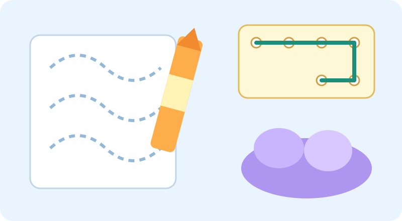

Parent and teacher guide · Ages 3–6
7 Fun Fine Motor Activities to Help Children Get Ready for Writing
When a preschooler presses too hard on a crayon, switches hands or abandons a tracing page after two lines, another worksheet may not be the best next step. Try a short activity that gives their hands a different kind of work. Play dough, paper and everyday objects are enough to get started.

1. Make a play dough bakery
Give your child a soft ball of play dough. Roll it with both palms, then pinch off large pieces to make pretend buns. Flatten each bun gently and press a few marks into it with a fingertip. Let your child choose the shapes rather than copying a perfect example.
For a child who tires quickly, use softer dough and stop after a few pieces. An older preschooler can roll a short snake and bend it into a circle or curve. Supervise and use age-appropriate non-toxic materials.
2. Tear paper for a picture
Offer broad strips of colored paper. Show how to hold one side steady while pulling the other with the opposite hand. Make a pile of torn pieces and use a glue stick to arrange them into a tree, flower or abstract picture. The goal is coordinating both hands, not making identical pieces.
3. Pick up and move large objects
Set out two bowls and several clean washcloths or large soft blocks. Move the pieces with child-safe kitchen tongs. If the tongs are difficult, start with hands or a scoop. Ask your child to move one piece at a time. Keep the bowls close together at first.
Change the task by sorting the objects by color. Use only items too large to be choking hazards, supervise closely and avoid sharp tools.
4. Draw on a vertical surface
Tape a large sheet of paper to a wall at a comfortable height. Give your child a washable chunky crayon and draw a road from one side of the paper to the other. Invite them to add curves, hills and loops around your road. Drawing on a vertical surface changes how the arm and hand move compared with sitting at a table.
If reaching is uncomfortable, lower the paper or use a table instead. There is no need to insist on a particular grip; choose a tool your child can hold and guide comfortably.
5. Follow wide paths with a finger
Draw a line from a pretend house to a tree. Ask your child to follow it with a finger, then with a crayon if they want. Start with straight lines and gradually try curves or a zigzag. A broad route leaves room to make mistakes without feeling that the page is ruined.

6. Fold a washcloth
Set a small washcloth flat on the table. Fold one edge over to the opposite edge together, press it down and then unfold it. Try folding it into quarters. Children can work alongside you when putting laundry away. Holding the cloth with one hand while adjusting the edge with the other is useful practice in coordinating hands.
7. Lace a large card
Use a purpose-made child-safe lacing card with large holes and a short, thick lace. Show how to feed the lace through a hole, pull it partway and turn the card over. Start with two or three holes. Let children choose where to lace next. Keep this an adult-supervised activity and store cords out of children’s reach afterward.
A five-minute routine before tracing
Pick one activity above for three minutes. Spend the next minute drawing or tracing a wide path. Finish by letting your child make a mark of their choice. If they are enjoying it, continue; if they are tired, put the pencils away. A short session that ends comfortably is more useful than forcing an entire page.
More free learning resources
For families who want to add printable practice to hands-on learning, these four KidsTracing resources cover early reading, writing and general learning.
 Free preschool and kindergarten curriculum36-week printable learning plan
Free preschool and kindergarten curriculum36-week printable learning plan Ocean Animals Activity BookTracing, matching and counting
Ocean Animals Activity BookTracing, matching and counting Pyramid Reading: Short VowelsEarly sentence-reading practice
Pyramid Reading: Short VowelsEarly sentence-reading practice Sky Line, Grass Line, Worm LineGuide to handwriting lines
Sky Line, Grass Line, Worm LineGuide to handwriting lines